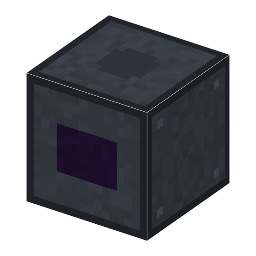

説明
①子ども いちばん細かい模様を焼く露光装置。光も鏡も、全部が真空の中。
②学生 スキャナー＋ターボ分子ポンプ×2＋電磁石＋鋼×4＋銅ケーブル。入口はスキャナーと同じ（板・反射型の EUV マスク・EUV の投影光学・台のねじ・マスクの台のねじ・照明の絞り）。隣に EUV 光源と真空容器（1Pa 以下）。鏡10枚とマスクで光は約2%に減り、1チップに 0.2J 当てるので、届く光が少ないほど時間がかかる（光源のレーザーを増やすと速い）。
③大人 オランダの会社が長い開発の末に作り、2019年に7nm 世代のチップの量産が始まった⚠️。1台が家1軒より大きく、世界で1社しか作れない。
④ガチ 光源で 約250W の EUV を作っても、約10枚の鏡で1枚ごとに約3割失い、ウェハーに届くのは数W。だから光源の強さが、1時間に焼ける枚数を決めた。
作り方
使い道
（このアイテムを使うレシピは無い）